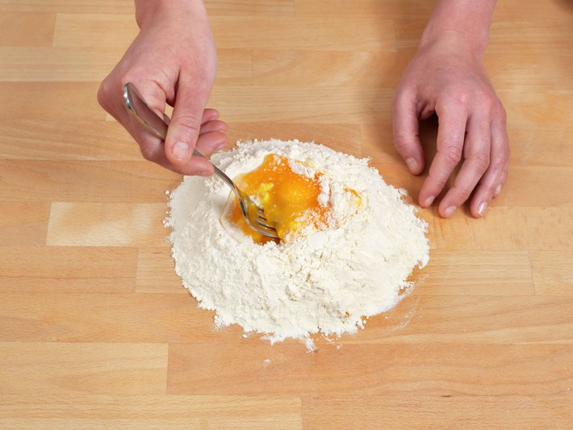
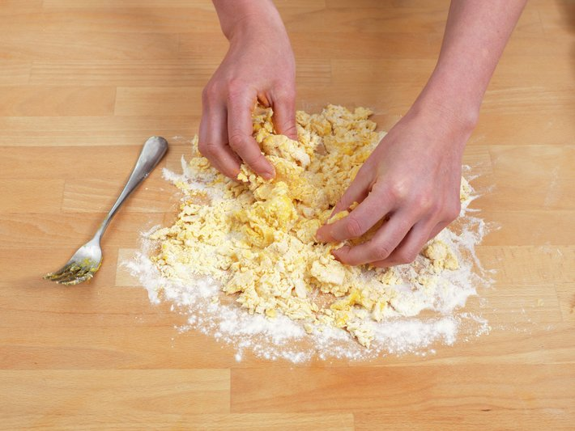
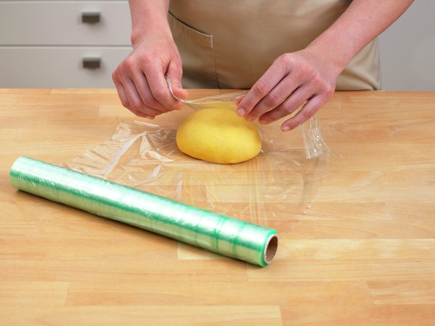
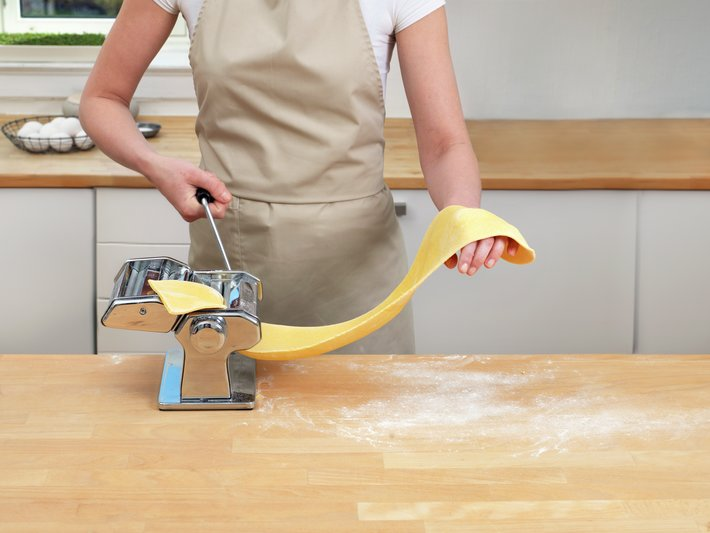
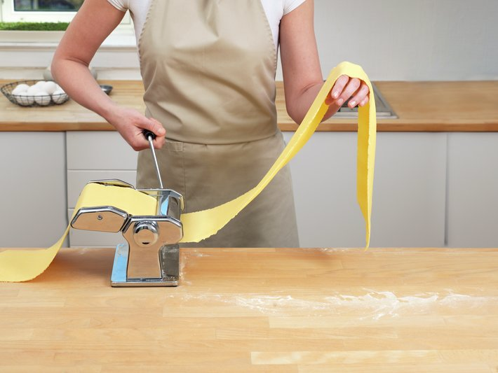
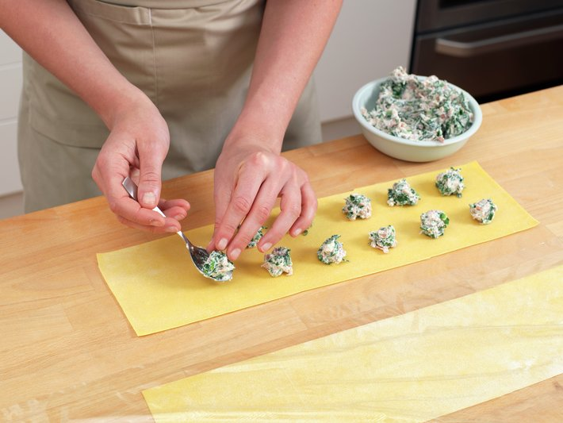
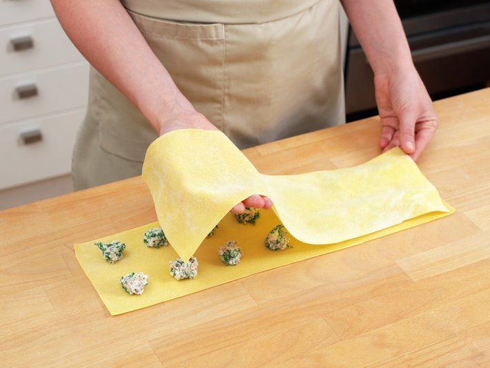
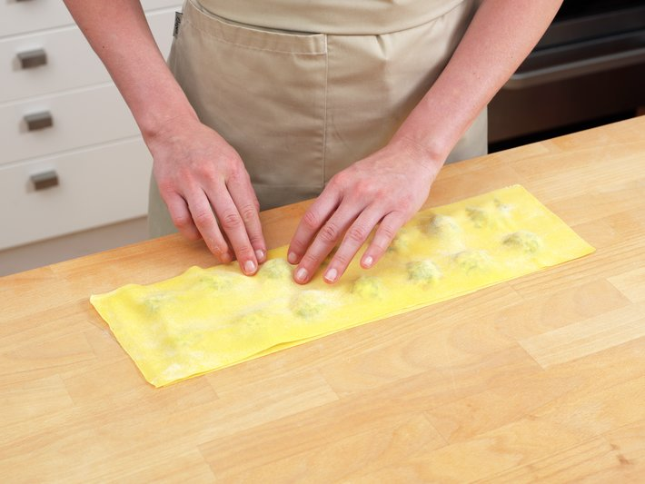
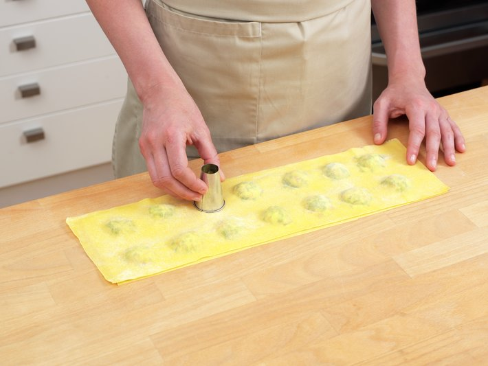
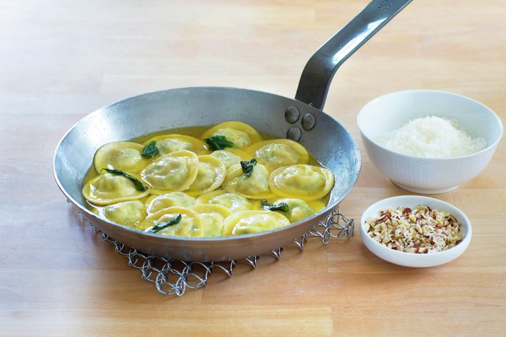

| Fremgangsmåte |
Illustrasjon |
| 1. Sikt melet i en liten haug på arbeidsbordet og lag en fordypning midt i haugen. Ha i salt, hele egg og eggeplommer. |
 |
| 2. Bland ingrediensene sammen med en gaffel eller med fingertuppene. Bland forsiktig inn litt og litt mel til alt er blandet. |
 |
| 3. Når nesten alt melet er absorbert i melet kan du samle alt til en deig med hendene. Deigen skal knas i minst 5 minutter. Den kan mange ganger kjennes litt hard ut til å begynne med, men etter hvert som du knar vil du kjenne at den blir smidigere og lettere å jobbe med. |
 |
| 4. Pastadeigen er ferdig knadd når den er myk, smidig, elastisk, varm og god. Hvis den kleber litt til benken drysser du bare på litt mer mel og knar litt til. |
 |
| 5. Pakk pastadeigen godt inn i plastfolie, eller legg den i en tett pose. Deigen skal hvile i 30 minutter før du kjevler den ut eller kjører den gjennom pastamaskin. |
 |
| 6. Lag fyll. Kok opp vann i en stor gryte og ha i salt. Ha spinat i det kokende vannet i 30 sekunder, slik at den får en fin grønn farge. Ta opp spinaten med en hullsleiv og avkjøl straks i iskaldt vann. Klem ut alt vannet av spinaten. |
 |
| 7. Finhakk spinaten og bland den sammen med de øvrige ingrediensene i en bolle. Sett bollen i kjøleskap frem til du skal fylle ravioliene. |
 |
| 8. Pakk ut pastadeigen og legg den på en melet kjøkkenbenk. Form deigen til en firkant med ca. samme bredde som pastamaskinens inntak. Still maskinen på det tykkeste hakket (O) og kjør/sveiv deigen gjennom. |
 |
| 9. Sett pastamaskinen på ett hakk tynnere (1) og kjør deigen igjennom. Fortsett med ett hakk til (2) og brett deigen fra endene inn til midten slik at du får en jevn rektangulær pastaplate med rette kanter. |
 |
| 10. Kjør pastaen igjennom maskinen igjen på det tykkeste (O) og fortsett slik på alle trinnene helt til du har deigen så tynn som du vil ha den. Vanligste trinn for ravioli, spagetti og tagliatelle er trinn 6 på maskinen. |
 |
| 11. Del pastaleiven i to med en kniv, slik at du har to like store deler. Legg plastfilm over den ene delen slik at den ikke tørker ut. Bruk en teskje og legg fyllet på i små porsjoner. Sørg for å ha like stort mellomrom mellom porsjonene som fra sidene og inn til fyllet. |
 |
| 12. Legg pastaleiven som ikke har fyll over leiven med fyll. |
 |
| 13. Bruk pekefinger og langfinger på begge hendene dine. Legg et lite svakt trykk over hver fyllporsjon. Trykk deretter ned pasta rundt hver fyllporsjon, slik at pasta møter pasta og at det ikke dannes luftlommer. |
 |
| 14. Bruk baksiden av en stor tyll (kremtip) til å trykke lett ned rundt fyllet. Slik får du også en fin delikat form på ravioliene |
 |
| 15. Stikk ut ravioliene med en utstikker. |
 |
| 16. Kok opp en stor kjele med vann. Ha i salt og kok ravioli til den er al dente, ca. 4 minutter. |
 |